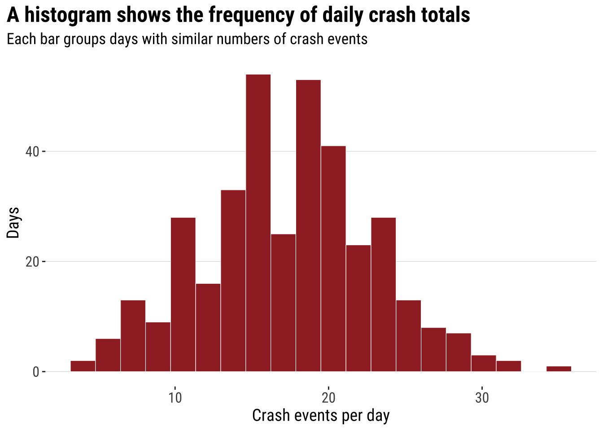
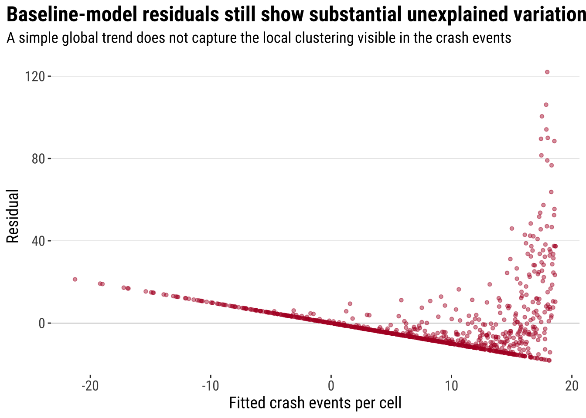
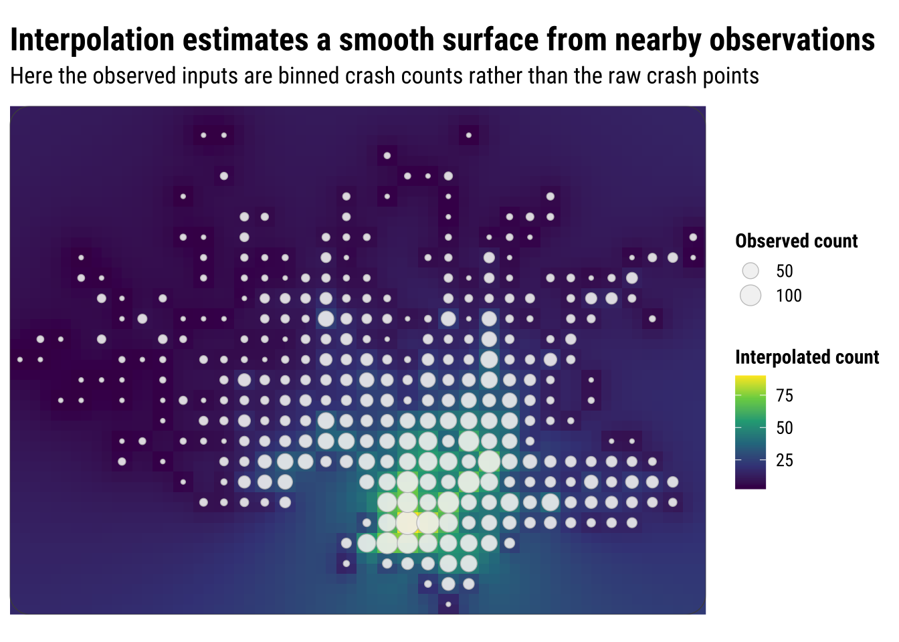

3 Point Patterns
3.1 Introduction, context and aims
This chapter introduces point-pattern thinking through a Montevideo case: traffic injury records from 2022. The aim is not to treat each point as an isolated dot, but to ask what the overall spatial pattern suggests about concentration, clustering, and the way incidents accumulate across the city. This is often the first analytical step with point data in applied spatial work. Before we build formal models, we usually want to know where events are concentrated, whether that concentration is local or widespread, and how different mapping choices change what we see.
The course brief sets an important rule for this dataset: we should treat it as a dataset of crash events, not of injured persons. The original records are person-level observations, so several rows can refer to the same crash. For point-pattern analysis, that matters because repeated person records at the same coordinates would exaggerate density in places where a single crash involved several people. We therefore collapse the data to unique events using Novedad, X, and Y, and we declare the CRS explicitly as EPSG:32721 throughout.
3.2 Dependencies
3.3 Data description
The chapter uses the Montevideo traffic injuries file for 2022, stored locally as data/montevideo-traffic-injuries-2022.csv. The source data are recorded at the person level, which means a single crash can appear in more than one row if several people were injured. For point-pattern analysis, the more appropriate observational unit is the crash event rather than the injured person. That is why this chapter collapses the source records to unique events before mapping or smoothing them.
The dataset is also a good teaching case because it combines several things students need to notice early in spatial work:
- the geometry is stored as coordinates in a regular table rather than as a ready-made spatial file
- the coordinate system is projected, not longitude/latitude
- the observational unit in the raw file is not yet the analytical unit we want
This is exactly the sort of practical situation that often appears in applied research. The data are usable, but only after we inspect them carefully and make the analytical unit explicit.
3.4 Data wrangling
We begin by reading the Montevideo traffic injuries file, cleaning the column names, and collapsing person-level records to unique crash events. The code below also reads the local OSM context layers used later for the city-scale point map.
uruguay <- spData::world |>
# Keep only the Uruguay boundary for national context
filter(name_long == "Uruguay") |>
st_make_valid()
uruguay_utm <- st_transform(uruguay, 32721)
injury_path <- "data/montevideo-traffic-injuries-2022.csv"
roads_path <- "data/osm/montevideo_roads.gpkg"
coastline_path <- "data/osm/montevideo_coastline.gpkg"
if (!file.exists(injury_path)) {
stop("The chapter expects data/montevideo-traffic-injuries-2022.csv to be present.")
}
injuries_raw <- read_csv(
injury_path,
show_col_types = FALSE
) |>
# Standardise names once so later code is easier to read
rename_with(\(x) {
x |>
iconv(to = "ASCII//TRANSLIT", sub = "") |>
make.names(unique = TRUE) |>
str_to_lower()
}) |>
mutate(
# Parse the source date field for the histogram section
fecha = dmy(str_trim(fecha)),
x = as.numeric(x),
y = as.numeric(y)
)
crash_events_tbl <- injuries_raw |>
# Collapse person-level rows to unique crash events
group_by(novedad, x, y) |>
summarise(
persons_recorded = n(),
event_date = first(na.omit(fecha)),
across(any_of(c("calle", "zona", "departamento", "localidad")), first),
.groups = "drop"
) |>
mutate(data_source = "Montevideo traffic injuries (event-collapsed)")
crash_events <- st_as_sf(
crash_events_tbl,
# The course brief specifies WGS 84 / UTM zone 21S
coords = c("x", "y"),
crs = 32721,
remove = FALSE
)
crash_events_ll <- st_transform(crash_events, 4326)
study_window <- st_as_sfc(st_bbox(crash_events)) |>
st_buffer(1000)
study_window_ll <- st_transform(study_window, 4326)
if (file.exists(roads_path)) {
local_roads_ll <- st_read(roads_path, quiet = TRUE) |>
st_crop(study_window_ll) |>
filter(highway %in% c(
"trunk", "trunk_link",
"primary", "primary_link",
"secondary", "secondary_link",
"tertiary", "tertiary_link"
)) |>
mutate(
road_class = case_when(
highway %in% c("trunk", "trunk_link", "primary", "primary_link") ~ "Primary network",
highway %in% c("secondary", "secondary_link") ~ "Secondary roads",
TRUE ~ "Tertiary roads"
)
)
} else {
local_roads_ll <- st_sf(
road_class = character(),
geometry = st_sfc(),
crs = 4326
)
}
if (file.exists(coastline_path)) {
local_coastline_ll <- st_read(coastline_path, quiet = TRUE) |>
st_crop(study_window_ll)
} else {
local_coastline_ll <- st_sf(geometry = st_sfc(), crs = 4326)
}
daily_crashes <- crash_events |>
st_drop_geometry() |>
mutate(event_date = as.Date(event_date)) |>
filter(!is.na(event_date)) |>
count(event_date, name = "daily_crashes")The collapse step changes the unit of analysis in an important way. Each row in injuries_raw refers to a person recorded in a crash, but each row in crash_events refers to one spatially unique crash event. That makes the event layer much more appropriate for point-pattern methods such as binning and kernel density estimation.
# A tibble: 3 × 2
measure value
<chr> <dbl>
1 Person-level rows in the imported table 7802
2 Unique crash events after collapsing 6333
3 Average persons recorded per crash event 1.233.5 Data exploration
A useful way to introduce point analysis is to begin with a simple univariate question before returning to full geography. Here we ask: how often do different daily crash totals occur? In other words, how many days had relatively few crash events, and how many had many? A histogram gives us the first answer and keeps the focus on frequency rather than on location. This is a helpful starting point because most students already know how to read a histogram. We can therefore begin with a familiar summary of variation and then extend the same logic into space.
hist_daily_crashes <- ggplot(daily_crashes, aes(x = daily_crashes)) +
# Bin daily crash totals into a standard histogram
geom_histogram(bins = 20, fill = "#9E2A2B", colour = "white", linewidth = 0.2) +
labs(
title = "A histogram shows the frequency of daily crash totals",
subtitle = "Each bar groups days with similar numbers of crash events",
x = "Crash events per day",
y = "Days"
) +
theme_plot_course()
print(hist_daily_crashes)
This is not yet a point-pattern map, but it introduces two ideas that matter later. First, histograms summarise many observations into bins. Second, once the bins are drawn, we can start thinking about smoothing the distribution rather than reading every individual observation separately. In other words, the histogram is already doing what much point-pattern analysis does more generally: it turns many separate observations into a pattern that is easier to compare and interpret.
The next step is to smooth that one-dimensional histogram into a kernel density curve. This does not change the basic question. It simply replaces the abrupt edges of histogram bins with a continuous estimate of relative density. The aim is not to produce a more “correct” picture, but a smoother one that makes the shape of the distribution easier to see.
dens_daily_crashes <- ggplot(daily_crashes, aes(x = daily_crashes)) +
# Rescale the histogram to density so it matches the kernel curve
geom_histogram(
aes(y = after_stat(density)),
bins = 20,
fill = "grey85",
colour = "white",
linewidth = 0.2
) +
# Overlay the one-dimensional kernel density estimate
geom_density(fill = "#9E2A2B", alpha = 0.45, colour = "#9E2A2B", linewidth = 0.5) +
labs(
title = "A one-dimensional kernel is a smoothed version of the histogram",
subtitle = "The same daily crash totals are now represented as a continuous density curve",
x = "Crash events per day",
y = "Relative density"
) +
theme_plot_course()
print(dens_daily_crashes)
That transition is the key intuition for the rest of the chapter. In one dimension, the kernel smooths a univariate distribution. In two dimensions, the same logic is applied across both X and Y, so we move from a cloud of event locations to a smoothed spatial surface. This is why the histogram-first route can be useful pedagogically: students see that spatial smoothing is not a completely new idea, but an extension of a familiar one. Before doing that, however, it helps to see the raw event geography directly.
3.6 A first point map
The simplest map is often worth making first. A raw point map preserves the full event geography and shows whether the events occupy a narrow corridor, a dispersed urban footprint, or a few distinct clusters. At the same time, raw point maps can become hard to read when many events overlap. This makes them a good starting point, but not usually the end point. They are especially useful at the beginning of an analysis because they let us inspect the observations with very little modelling or aggregation imposed on them.
map_national_context <- ggplot() +
# Show where Montevideo sits inside the national territory
geom_sf(data = uruguay, fill = "grey95", colour = "grey65", linewidth = 0.3) +
# Plot the crash events with transparency to reveal overlap
geom_sf(data = crash_events_ll, colour = "#B2182B", alpha = 0.25, size = 0.5) +
labs(
title = "Montevideo crash events in national context",
subtitle = "Unique crash events collapsed from person-level injury records"
) +
theme_map_course()
print(map_national_context)
If we zoom into the city-scale pattern, the overlap becomes easier to see. The dense cloud of points tells us immediately that simple plotting will struggle to communicate relative intensity once many events sit very close together.
map_raw_points <- ggplot() +
# Draw the local study window around the observed events
geom_sf(data = study_window_ll, fill = "#FBFBFA", colour = "grey80", linewidth = 0.2) +
# Add a faint coastline line for immediate orientation
geom_sf(data = local_coastline_ll, colour = "#A7C5D9", linewidth = 0.45, alpha = 0.9) +
# Add the main road network with a visible class hierarchy
geom_sf(
data = filter(local_roads_ll, road_class == "Tertiary roads"),
colour = "grey78",
linewidth = 0.18,
alpha = 0.9
) +
geom_sf(
data = filter(local_roads_ll, road_class == "Secondary roads"),
colour = "grey62",
linewidth = 0.3,
alpha = 0.95
) +
geom_sf(
data = filter(local_roads_ll, road_class == "Primary network"),
colour = "grey42",
linewidth = 0.48,
alpha = 1
) +
# Plot each crash event as a lighter point so the road structure remains visible
geom_sf(data = crash_events_ll, colour = "#B2182B", alpha = 0.2, size = 0.32) +
labs(
title = "A raw point map keeps the event geography intact",
subtitle = "Transparency helps, but dense areas are still difficult to compare"
) +
theme_map_course()
print(map_raw_points)
Raw points are useful because they preserve detail and make no smoothing assumptions. But they are limited when the analytical question is about concentration rather than about individual locations. At this point, the parallel with the histogram should be clear: just as a one-dimensional histogram summarises values into bins, a spatial binning map summarises point events into two-dimensional bins. This is often the first real shift in point-pattern thinking: we stop asking only where each event is and start asking how events accumulate across nearby parts of the city.
3.7 Baseline modelling
To make the chapter structure consistent with the wider course plan, we introduce a simple baseline model before moving fully into the point-pattern methods. For point events, this requires a small change of representation: we first count crash events inside regular 1 kilometre grid cells and then treat each cell as the observational unit. That gives us a basic areal outcome that can be modelled with ordinary linear regression.
This baseline model is intentionally simple. It asks whether a broad spatial trend in crash counts can be captured using only the grid-cell centroid coordinates. In other words, can a smooth east-west or north-south trend explain much of the pattern before we use the more flexible point-pattern tools?
square_grid <- st_make_grid(
study_window,
cellsize = 1000,
square = TRUE
) |>
st_as_sf() |>
mutate(cell_id = row_number())
square_grid$n_events <- lengths(st_intersects(square_grid, crash_events))
baseline_centroids <- st_centroid(square_grid)
baseline_coords <- st_coordinates(baseline_centroids)
baseline_cells <- baseline_centroids |>
# Use centroid coordinates as a simple non-spatial baseline trend
mutate(
x_coord = baseline_coords[, 1],
y_coord = baseline_coords[, 2]
) |>
st_drop_geometry()
baseline_lm <- lm(
n_events ~ x_coord + y_coord + I(x_coord^2) + I(y_coord^2),
data = baseline_cells
)3.7.1 Statistical inference and interpretation
The baseline model is deliberately simple, but it still gives us a useful inferential benchmark. The coefficients show whether there is evidence of a broad spatial trend in crash-event counts across the grid, while the polynomial terms allow that trend to bend rather than forcing it to be purely linear.
baseline_terms <- broom::tidy(baseline_lm, conf.int = TRUE)
baseline_terms# A tibble: 5 × 7
term estimate std.error statistic p.value conf.low conf.high
<chr> <dbl> <dbl> <dbl> <dbl> <dbl> <dbl>
1 (Intercept) -2.45e+6 4.33e+5 -5.66 2.02e- 8 -3.30e+6 -1.60e+6
2 x_coord 7.19e-2 6.68e-3 10.8 1.99e-25 5.87e-2 8.50e-2
3 y_coord 7.91e-1 1.41e-1 5.62 2.57e- 8 5.15e-1 1.07e+0
4 I(x_coord^2) -6.25e-8 5.83e-9 -10.7 2.70e-25 -7.40e-8 -5.11e-8
5 I(y_coord^2) -6.44e-8 1.15e-8 -5.62 2.51e- 8 -8.69e-8 -4.19e-8The practical interpretation matters more than the exact coefficient values. If the fitted trend captures only a modest share of the variation, that suggests the crash pattern is shaped less by one smooth city-wide gradient and more by local clustering. That is exactly the situation where point-pattern methods become more informative than a simple global regression.
3.7.2 Model assessment
# A tibble: 1 × 6
r.squared adj.r.squared sigma AIC BIC nobs
<dbl> <dbl> <dbl> <dbl> <dbl> <int>
1 0.210 0.206 15.7 7311. 7340. 875For this baseline model, the most useful assessment measures are R2, adjusted R2, AIC, and the residual spread (sigma). Together they tell us how much of the variation is being explained and how much unexplained structure remains. For point-event concentration, we should expect a simple global trend model to leave a lot of local variation in the residuals.
baseline_aug <- broom::augment(baseline_lm, data = baseline_cells)
baseline_diagnostics <- ggplot(baseline_aug, aes(x = .fitted, y = .resid)) +
# Check whether residuals still show large unexplained variation
geom_hline(yintercept = 0, colour = "grey75", linewidth = 0.3) +
geom_point(colour = "#B2182B", alpha = 0.45, size = 1.2) +
labs(
title = "Baseline-model residuals still show substantial unexplained variation",
subtitle = "A simple global trend does not capture the local clustering visible in the crash events",
x = "Fitted crash events per cell",
y = "Residual"
) +
theme_plot_course()
print(baseline_diagnostics)
3.7.3 Model prediction
square_grid_ll <- st_transform(square_grid, 4326)
square_grid_ll$predicted_events <- predict(baseline_lm, newdata = baseline_cells)
baseline_prediction_map <- ggplot(square_grid_ll) +
# Map the fitted baseline counts so students can compare them with later methods
geom_sf(aes(fill = predicted_events), colour = NA) +
scale_fill_course_seq_c(name = "Predicted count") +
labs(
title = "Baseline OLS prediction produces a broad spatial trend surface",
subtitle = "Useful as a benchmark, but too smooth to recover local crash-event concentration"
) +
theme_map_course()
print(baseline_prediction_map)
In practice, that predicted surface can be useful as a benchmark because it tells us what a very simple non-spatial trend would imply. But it is also clear that this benchmark is too smooth for the chapter’s main problem. A simple polynomial trend can capture a broad centre-periphery structure if one exists, yet it cannot recover the fine-grained local clustering that makes point data analytically interesting in the first place. That limitation is the main reason to continue into the chapter-specific spatial methods rather than stopping with the baseline model.
3.8 Point-pattern extensions
The remainder of the chapter focuses on the methods that are more natural for point-event data: binning, kernel density estimation, and interpolation. These methods do not replace substantive interpretation, but they are often much better suited than a simple global trend model for showing how crash events accumulate across space.
3.9 Binning events into regular cells
Binning counts events inside regular spatial units. This is useful because it replaces a cloud of overlapping points with a map of local totals. The logic is simple: define a grid, count how many events fall inside each cell, and then map the counts. In that sense, a binned point map is the two-dimensional cousin of a histogram. The result is easier to compare visually, though it introduces a new design choice because the pattern will now depend partly on cell size and grid shape. Binning is often a strong middle ground in applied work because it reduces clutter without immediately imposing a fully smooth surface.
Here we compare a square grid with a hexagonal grid, both using a cell size of 1 kilometre. The exact size is a modelling choice rather than a universal rule. Smaller cells preserve more local variation, while larger cells smooth the pattern more strongly.
hex_grid <- st_make_grid(
study_window,
cellsize = 1000,
square = FALSE
) |>
st_as_sf() |>
mutate(cell_id = row_number())
hex_grid$n_events <- lengths(st_intersects(hex_grid, crash_events))
grid_compare <- bind_rows(
square_grid |> mutate(method = "Square grid"),
hex_grid |> mutate(method = "Hexagonal grid")
) |>
st_transform(4326)binned_grid_map <- ggplot(grid_compare) +
# Fill each grid cell by the number of crash events it contains
geom_sf(aes(fill = n_events), colour = NA) +
facet_wrap(~method) +
scale_fill_course_seq_c(name = "Crash events") +
labs(
title = "Binning turns point events into comparable local counts",
subtitle = "Both maps use 1 km cells, but the shape of the grid still affects the pattern"
) +
theme_map_course() +
theme(
strip.text = element_text(face = "bold", family = "robotocondensed")
)
print(binned_grid_map)
The substantive lesson is that binning helps us see concentration without pretending that the pattern is perfectly continuous. It is often a strong middle ground between raw points and full smoothing. At the same time, the comparison above is a reminder that binned maps are still analytical constructions. Change the grid origin, cell size, or shape, and the resulting pattern can shift. This is one of the practical forms taken by the broader issue of spatial representation: the pattern we see depends partly on how we choose to summarise the underlying observations.
3.10 Kernel density estimation
Kernel density estimation (KDE) takes a different approach. Instead of counting events inside fixed cells, it places a smooth kernel around each event and adds those local contributions together. If the previous section treated the grid map as a spatial histogram, this section treats KDE as the two-dimensional extension of the one-dimensional density curve shown earlier. The result is a continuous surface of relative event intensity. This usually makes hotspots easier to identify, especially when events are numerous and unevenly clustered.
For point data such as crash events, KDE is often more intuitive than a raw point cloud because it emphasises where events accumulate. It can be especially helpful when the aim is exploratory analysis or communication, because the broad zones of higher intensity are easier to identify than they are in a dense point plot. But it is important to remember what KDE does and does not do. It smooths observed event locations into a surface. It does not tell us why the hotspots exist, and it does not measure underlying crash risk unless we also account for exposure such as traffic volume, road length, or population movement.
coords <- st_coordinates(crash_events)
bbox_utm <- st_bbox(study_window)
bandwidth <- pmax(
c(MASS::bandwidth.nrd(coords[, 1]), MASS::bandwidth.nrd(coords[, 2])),
500
)
kde_surface <- MASS::kde2d(
x = coords[, 1],
y = coords[, 2],
h = bandwidth,
n = 180,
lims = c(bbox_utm$xmin, bbox_utm$xmax, bbox_utm$ymin, bbox_utm$ymax)
)
kde_df <- expand.grid(
x = kde_surface$x,
y = kde_surface$y
) |>
as_tibble() |>
mutate(
# Flatten the KDE matrix in the same x-y order used by kde2d()
density = c(kde_surface$z)
)kde_map <- ggplot() +
# Draw the smooth density surface first
geom_raster(data = kde_df, aes(x = x, y = y, fill = density)) +
# Overlay the observed crash events so students can compare points with the smoothed surface
geom_point(
data = st_drop_geometry(crash_events),
aes(x = x, y = y),
shape = 21,
fill = scales::alpha("white", 0.42),
colour = scales::alpha("white", 0.7),
stroke = 0.12,
size = 0.82
) +
# Mark the study window boundary
geom_sf(data = study_window, fill = NA, colour = "grey35", linewidth = 0.25) +
coord_sf(
crs = st_crs(32721),
xlim = c(bbox_utm$xmin, bbox_utm$xmax),
ylim = c(bbox_utm$ymin, bbox_utm$ymax),
expand = FALSE,
datum = NA
) +
scale_fill_course_seq_c(name = "Relative density", trans = "sqrt") +
labs(
title = "Kernel density estimation highlights sustained concentrations",
subtitle = "Brighter areas indicate higher local concentration, with the observed crash events overlaid"
) +
theme_map_course()
print(kde_map)
Compared with the binned maps, KDE produces a more continuous picture of concentration. This is often helpful for communication because students and policy audiences can quickly identify broad zones of higher intensity. But the smoother look should not be confused with greater certainty. KDE is still a modelling choice, and different bandwidths can make hotspots appear sharper or more diffuse.
3.11 Interpolating a continuous surface from local counts
Interpolation is another way to move from discrete observations to a continuous-looking surface. In this chapter we use it cautiously, because crash events are not direct measurements of a physical field such as temperature or rainfall. To make the example more sensible, we first aggregate events to the centroids of 1 kilometre grid cells and interpolate those local counts with inverse distance weighting (IDW). Nearby cells therefore contribute more strongly to the estimated surface than distant cells.
This is useful pedagogically because it shows what interpolation does: it estimates unobserved values from nearby observed ones. For social-science point data, however, interpolation should usually be interpreted as an exploratory visual aid rather than as a definitive surface.
observed_cells <- square_grid |>
filter(n_events > 0) |>
# Use cell centroids as the observed support points for interpolation
st_centroid()
prediction_points <- st_make_grid(
study_window,
cellsize = 500,
what = "centers"
) |>
st_as_sf()
idw_surface <- gstat::idw(
formula = n_events ~ 1,
locations = observed_cells,
newdata = prediction_points,
idp = 2.0,
debug.level = 0
)
idw_df <- idw_surface |>
mutate(
x = st_coordinates(idw_surface)[, 1],
y = st_coordinates(idw_surface)[, 2]
) |>
st_drop_geometry()idw_map <- ggplot() +
# Plot the interpolated surface of local event intensity
geom_tile(data = idw_df, aes(x = x, y = y, fill = var1.pred)) +
# Add the observed grid centroids used by the interpolation
geom_sf(
data = observed_cells,
aes(size = n_events),
shape = 21,
fill = scales::alpha("grey95", 0.6),
colour = "grey75",
stroke = 0.35,
alpha = 0.9
) +
geom_sf(data = study_window, fill = NA, colour = "grey30", linewidth = 0.25) +
coord_sf(
crs = st_crs(32721),
xlim = c(bbox_utm$xmin, bbox_utm$xmax),
ylim = c(bbox_utm$ymin, bbox_utm$ymax),
expand = FALSE,
datum = NA
) +
scale_fill_course_seq_c(name = "Interpolated count") +
scale_size_continuous(name = "Observed count") +
guides(
size = guide_legend(
override.aes = list(
shape = 21,
fill = scales::alpha("grey95", 0.6),
colour = "grey75",
stroke = 0.35,
alpha = 0.9
)
)
) +
labs(
title = "Interpolation estimates a smooth surface from nearby observations",
subtitle = "Here the observed inputs are binned crash counts rather than the raw crash points"
) +
theme_map_course()
print(idw_map)
This map is visually similar to KDE, but the underlying logic is different. KDE smooths around each event location, while interpolation predicts values at unsampled locations from nearby observed values. For crash-event analysis, KDE is usually the more natural tool because the input is itself a point-event pattern. Interpolation can still be useful for teaching and exploration, but it should be used with care and interpreted modestly.
3.11.1 Statistical interpretation of the spatial methods
The point-pattern methods in this chapter do not produce regression coefficients in the same way as the baseline model, but they still support statistical interpretation. Binning shows where observed counts accumulate under a chosen zoning system. KDE estimates where local event intensity is relatively higher or lower. IDW interpolation predicts values between observed cells by weighting nearby observations more strongly than distant ones. Each method therefore answers a different descriptive question about concentration, smoothing, and local continuity.
3.11.2 Assessing the spatial outputs
One practical way to assess these spatial outputs is to compare how well they track the observed counts in the grid cells used earlier. For KDE, the useful comparison is the correlation between relative density and observed counts. For IDW and the baseline regression, we can also examine prediction error because they produce cell-level fitted values on a count-like scale.
nearest_index <- function(values, grid) {
idx <- findInterval(values, grid)
idx <- pmax(1, pmin(idx, length(grid) - 1))
left <- grid[idx]
right <- grid[idx + 1]
ifelse(abs(values - left) <= abs(values - right), idx, idx + 1)
}
assessment_cells <- square_grid |>
st_centroid()
assessment_coords <- st_coordinates(assessment_cells)
assessment_cells <- assessment_cells |>
mutate(
centroid_x = assessment_coords[, 1],
centroid_y = assessment_coords[, 2]
) |>
st_drop_geometry() |>
transmute(
cell_id,
observed = n_events,
baseline_pred = predict(baseline_lm, newdata = baseline_cells),
kde_x = kde_surface$x[nearest_index(centroid_x, kde_surface$x)],
kde_y = kde_surface$y[nearest_index(centroid_y, kde_surface$y)]
) |>
left_join(
kde_df |>
rename(kde_x = x, kde_y = y, kde_density = density),
by = c("kde_x", "kde_y")
)
idw_cells <- idw_df |>
transmute(idw_x = x, idw_y = y, idw_pred = var1.pred)
assessment_cells <- assessment_cells |>
mutate(
idw_x = idw_df$x[nearest_index(kde_x, sort(unique(idw_df$x)))],
idw_y = idw_df$y[nearest_index(kde_y, sort(unique(idw_df$y)))]
) |>
left_join(idw_cells, by = c("idw_x", "idw_y"))
rmse <- function(observed, predicted) {
sqrt(mean((observed - predicted)^2, na.rm = TRUE))
}
assessment_summary <- tibble(
method = c("Baseline OLS", "KDE", "IDW"),
correlation_with_observed = c(
cor(assessment_cells$observed, assessment_cells$baseline_pred),
cor(assessment_cells$observed, assessment_cells$kde_density),
cor(assessment_cells$observed, assessment_cells$idw_pred)
),
rmse = c(
rmse(assessment_cells$observed, assessment_cells$baseline_pred),
NA_real_,
rmse(assessment_cells$observed, assessment_cells$idw_pred)
)
)
assessment_summary# A tibble: 3 × 3
method correlation_with_observed rmse
<chr> <dbl> <dbl>
1 Baseline OLS 0.458 15.7
2 KDE 0.943 NA
3 IDW 0.254 24.1This comparison is deliberately simple, but it is useful for teaching. It shows that assessment depends on the kind of output a method produces. Regression and interpolation can be compared more directly on prediction error, while KDE is better assessed as a relative concentration surface.
3.11.3 Prediction in practice
The final practical question is how these spatial methods can be used for prediction. In point-pattern work, prediction usually means identifying areas where new events are more likely to occur or where monitoring resources should be concentrated. A density surface or interpolated count surface does not predict a crash at a specific address and time. Instead, it predicts where higher local concentration is more plausible given the observed pattern.
prediction_targets <- assessment_cells |>
transmute(
cell_id,
observed,
baseline_pred,
kde_density,
idw_pred
) |>
arrange(desc(idw_pred)) |>
slice_head(n = 10)
prediction_targets cell_id observed baseline_pred kde_density idw_pred
1 19 0 15.19947 8.117865e-12 33.74776
2 54 0 16.07434 3.654411e-10 33.74776
3 89 10 16.82040 3.962544e-09 33.74776
4 124 107 17.43764 1.154676e-08 33.74776
5 159 65 17.92607 1.211162e-08 33.74776
6 194 82 18.28569 1.033013e-08 33.74776
7 229 56 18.51650 8.637213e-09 33.74776
8 264 29 18.61849 6.614179e-09 33.74776
9 299 42 18.59166 5.920173e-09 33.74776
10 334 26 18.43603 5.085127e-09 33.74776In practice, a table like this can be used to prioritise further investigation, road-safety auditing, or targeted field checks. The baseline model provides a broad trend benchmark, while KDE and IDW help identify more localised candidate hotspots. That is a good example of how descriptive spatial outputs can support practical prediction even when the chapter is not yet building a full causal or behavioural model.
3.12 Interpreting point-pattern maps carefully
Point-pattern maps are often compelling because they show spatial concentration quickly and clearly. But concentration is not the same as risk. A dense cluster of crash events may reflect heavy traffic, a complex road network, a busy commercial corridor, or simply the fact that more people and vehicles pass through that area. Without a denominator or exposure measure, these maps tell us where events accumulate, not necessarily where conditions are most dangerous.
This is one reason point-pattern analysis is usually exploratory and descriptive at first. It helps us identify candidate hotspots, compare visualisation methods, and generate substantive questions. Later analysis might relate those hotspots to land use, road hierarchy, public transport corridors, demographic composition, or accessibility measures. In other words, point maps help us see the geography of the problem before we try to explain it.
For practical work, the main lessons from this chapter are straightforward:
- raw point maps preserve detail but can quickly become cluttered
- binned maps trade detail for clearer local comparison
- KDE gives a smooth picture of relative intensity
- interpolation can be informative, but for event data it should be handled cautiously
The choice between these approaches is not only technical. It depends on the question you are asking, the scale at which you want to communicate results, and the degree of smoothing that can be defended substantively. Students who keep those trade-offs in mind will be in a much stronger position to move from exploratory mapping to later modelling chapters.